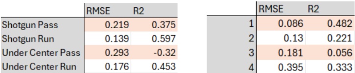
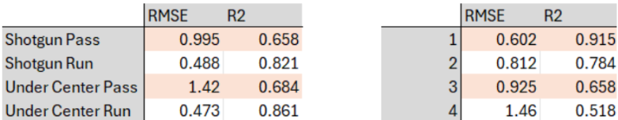

Model Validation
Understanding R² in NFL Play-By-Play Data
Evaluating the Random Forest models requires contextualizing the performance metrics within the fundamental properties of play-level NFL data. The yards-gained models achieved test set R² values that appear poor by conventional standards: Shotgun Pass at 0.0190, Shotgun Run at 0.0235, Under Center Pass at 0.0331, and Under Center Run at 0.0307 on the 2024-2025 test set. Each model had a 0.96, 1.18, 1.70, 1.55, percent improvement respectively over baseline RMSE. EPA model R2 values were lower, 0.0068, 0.0094, 0.0008, and 0.0124, respectively.
These values are not necessarily indicators of a poor model. They reflect the natural unpredictability of individual play outcomes in football, where the majority of EPA variance stems from execution factors invisible in pre-snap data: offensive line performance on a specific rep, defensive scheme adjustments invisible in the play-by-play record, quarterback accuracy on a given throw, receiver separation created or denied by individual matchup execution, and pure random variance from tipped balls, deflections, and contact bounces. A model with access only to situational variables, down, distance, field position, score, quarterback quality, and time, can at best capture the systematic component of variation attributable to those factors, which published NFL analytics research consistently places in the 5-15% range.
These results wouldn’t be inspiring, assuming that the recommendation function operates on single predictions for epa and yards gained. However, the accuracy of the models improve drastically when taking into account that the recommendation function simulates 10,000 predictions and taking an average of the results. The most practically meaningful validation of the recommendation system is not single-play prediction accuracy but situational prediction accuracy – how well the simulation framework estimates mean EPA across groups of plays sharing similar situational characteristics. This evaluation better reflects the system’s actual purpose: a coach does not need to predict the outcome of one specific play but rather to identify which formation-play type produces superior expected outcomes across the distribution of plays likely to occur in a given situation.
To conduct this evaluation, test set plays were grouped into situation-formation cells defined by down, distance category, field zone, and formation-play type, retaining only cells with at least 30 plays to ensure stable actual mean EPA estimates. This produced 150 situation-formation cells across the 2024-2025 test period. For each cell, the recommendation system’s simulation function was run with 10,000 iterations using the cell’s mean situational inputs, and the resulting simulated mean EPA was compared against the actual mean EPA observed in the test data. The simulation-level validation produced an overall R² of 0.3147 and RMSE of 0.210 EPA, representing a fundamental improvement over single-play R² values of 0.0008 to 0.0124.

Performance varied predictably across formation types, with Shotgun Run achieving the strongest results at R² of 0.597, followed by Under Center Run at 0.453, Shotgun Pass at 0.375, and Under Center Pass at -0.320. The negative value demonstrates that this formation-play type’s selection bias renders situational variables insufficient for prediction regardless of simulation volume, especially due to the fact that we don’t know what percentage of those calls are play-action.
By down, first down showed the strongest performance at R² of 0.482 while third down returned near-zero R² of 0.055, consistent with the high variance of conversion attempts and the Shotgun Run overvaluation errors identified in the systematic error analysis. By distance, very long situations led at R² of 0.750, while medium distance returned -0.345. Medium distance being the worst performing category reflects the vast amount of different schematic preferences coaches have and echo the systematic recommendation errors documented earlier.
Together these results establish that the simulation framework provides genuine decision support value in the situations that matter most for practical playcalling key downs like first and third down, how to keep drives efficient from long distance, and run play optimization. The reliability lookup system’s explicit flagging of low-confidence cells documents when predictions may be unreliable that Under Center Pass plays and medium distance predictions demand. The primary limitations are the absence of defensive personnel data, which would most directly address the short and medium yardage prediction gaps, and the temporal evolution inherent in models trained on 2016-2023 data applied to 2024-2025 offensive and defensive environments that have continued to evolve.

The parallel yards gained simulation produced substantially stronger results than the EPA simulation, with an overall R² of 0.7599 and correlation of 0.8831 across the same 150 situation-formation cells. This confirmed that yards gained has meaningfully more reliable situational prediction than EPA, consistent with the single-play model comparisons where yards R² values consistently exceeded EPA R² values within each formation type. Mean absolute error of 0.608 yards means on 3rd down the simulation estimates mean yards gained in a typical situation-formation cell to within roughly more than half a yard of the actual test set outcome, a level of precision sufficient to reliably rank formation-play options by their expected yardage contribution and calculate conversion probabilities that reflect genuine situational differences.
The formation-level breakdown showed strong performance across all four types, in contrast to the EPA results where Under Center Pass was a clear outlier. Under Center Run led at R² of 0.861, followed by Shotgun Run at R² of 0.821, with both run formations showing the tight distributional consistency documented in the residual analysis where run play yard standard deviations of approximately six yards were roughly half those of pass plays. Under Center Pass achieved R² of 0.684 despite its demonstrated EPA unpredictability, suggesting that while the value weighting of under center pass yards is situationally unpredictable, the raw yardage distribution itself has more consistent structure. Shotgun Pass returned R² of 0.658, solid performance across the 54 cells representing the most diverse situational range in the dataset. Under Center Run generated the minimum MAE value of 0.340, and Under Center Pass with a maximum of 1.05, meaning on average the yards model essentially predicts within a third of a yard to a full yard of the actual result.
By down, first down led at R² of 0.915 and MAE of 0.398 yards, while fourth down showed the weakest performance at R² of 0.518 and MAE of 1.09 yards, reflecting the extreme variance of fourth down conversion attempts across diverse field positions and score contexts. By distance, medium and short situations both achieved strong R² values of 0.812 and 0.808 respectively, a notable contrast to the EPA simulation where medium distance was the worst performing category at -0.432. This divergence between EPA and yards performance in medium distance situations reveals that the simulation accurately estimates how many yards a play will gain in these contexts, but the EPA value of those yards is not, likely because medium distance plays occur across a wider range of field positions and game states where the point value of a given yardage gain varies substantially. This finding directly informs the conversion probability outputs that are the yards simulation’s primary contribution to the recommendation system: the simulation can reliably estimate whether a play will gain enough yards to convert, even in situations where the EPA value of that conversion is difficult to predict precisely.
Systematic Error Analysis
To further evaluate situational accuracy, situational buckets were created by formation-play combination, down, and distance. Distance was categorized as Short(0-3 yards), Medium(4-6 yards), Long(7-10 yards), and Very Long(11+ yards). The mean EPA for each formation play combination in each of the 64 buckets was calculated from the test set, and then prediction values from the Random Forest models were taken to compare against the test set means. Of the 64 buckets, the recommendation function picked the best formation play combination for 42 cells, representing a 65.6% accuracy. Examining the 22 situation cells where the model produced incorrect recommendations revealed systematic rather than random error patterns. Six of the nine second-down errors involved the model predicting Under Center Pass when Shotgun Pass actually performed best, a pattern attributed to Under Center Pass’s smaller training sample and higher variance generating unreliable mean EPA estimates that the model treated as reliable signal. Five of the six third-down errors involved the model predicting Shotgun Run when Shotgun Pass was actually superior, a residual manifestation of the small-sample Shotgun Run inflation problem that the reliability lookup system partially but not fully addressed. I then classified the errors by either Correct Formation and Wrong Play Type, Wrong Formation and Correct Play Type, or Both Wrong. The model identified the correct play type but not the optimal formation 59.1 percent of the time, suggesting that the models have learned the run-pass decision reasonably well from situational variables but struggle most with the finer formation distinction that depends heavily on the personnel, blocking scheme, and defensive alignment information absent from the feature set. The model got both the formation and play type wrong on only 2 of the 22 incorrect recommendations.
For short-yardage errors on the goal line, the model chose Shotgun Run instead of Under Center Pass on 2nd and short, and Shotgun Run instead of Under Center Run on 3rd and short. Predicting Shotgun Run actually isn’t surprising as the earlier boxplot analysis of formation play combinations on the goal line identified Shotgun Run as the combination with highest median success percentage. Under Center Run advantages in goal-line and short-yardage situations derive from power blocking alignment, defensive personnel tendencies, and deception value from under-center formation’s run-heavy association. This is clearly a repeating issue that is relatively unfixable due to the limitations of the six-variable feature set, explaining why the model struggled to reliably distinguish Shotgun Run from Under Center Run in the situations where that distinction matters most.
The reliability lookup system addressed the most consequential errors by removing Insufficient-classified options from ranking and flagging Low-confidence options with explicit warnings. This correction prevented the most egregious recommendations while preserving the model’s strong performance in High-confidence situations, which represent 64 percent of practical playcalling scenarios.
Residual Distribution Properties
The simulation framework’s validity depended on residual distributions that accurately characterized the model’s prediction uncertainty. EPA residuals exhibited standard deviations of 1.5966 for Shotgun Pass, 1.0128 for Shotgun Run, 1.5052 for Under Center Pass, and 1.0030 for Under Center Run. Yards gained residuals showed standard deviations of 9.54 yards for Shotgun Pass, 5.94 yards for Shotgun Run, 10.97 yards for Under Center Pass, and 6.35 yards for Under Center Run.
These variance structures confirmed two analytically important patterns. First, pass plays carry substantially higher outcome variance than run plays across both formations, with EPA standard deviations approximately 50 percent larger for passing. This pass-run variance differential has direct implications for risk-aware playcalling: in situations where protecting expected value matters more than maximizing upside, run plays’ lower variance provides genuine strategic value independent of their mean EPA disadvantage. Second, residual distributions deviated meaningfully from normality in both directions. The positive tails were heavier than a normal distribution would predict, reflecting touchdown plays generating large positive EPA spikes, while the negative tails were similarly heavy due to sacks and turnovers. This non-normality validated the empirical residual sampling approach over parametric alternatives that assume normal prediction errors.